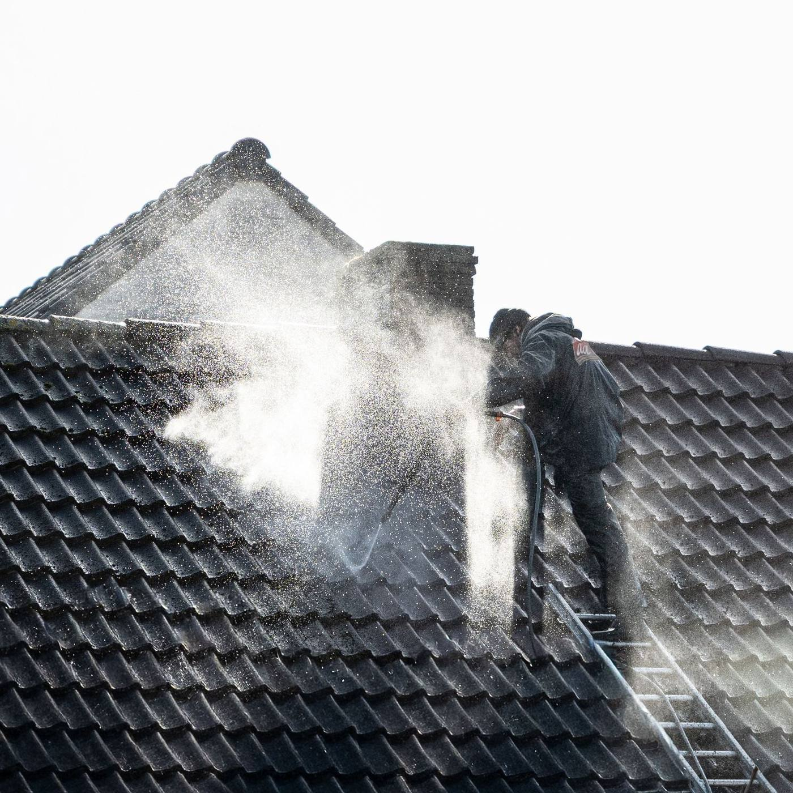
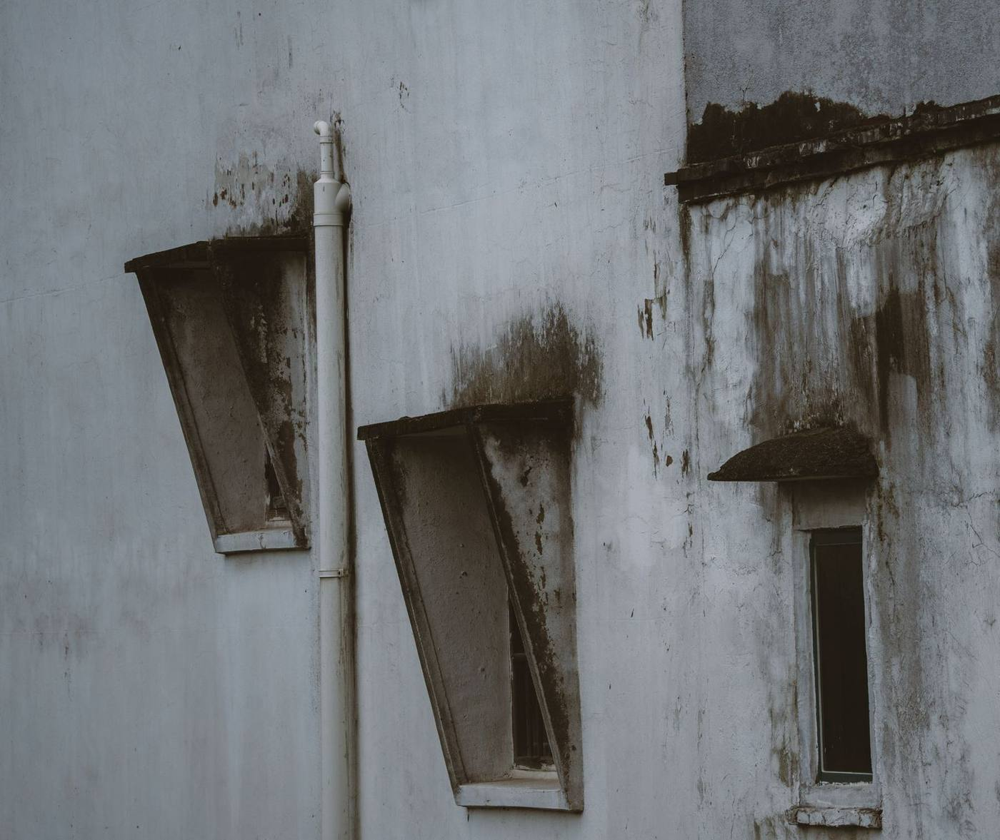

Recette interne
Les 10 pages de destination, par zone et par service.
Une page par groupe d'annonces : la requête du visiteur, l'annonce et le titre de la page disent la même chose. Ces pages sont en noindex et ne concurrencent pas vbrnettoyage.fr.
À faire avant la première diffusion
- Clé Web3Forms (formulaires inertes tant qu'elle vaut REMPLACER-…)
- Identifiant Google Ads et les 2 étiquettes de conversion (devis / appel)
- Domaine de publication et redirection HTTPS
- Mentions légales accessibles et assurance décennale à confirmer
Côtes-d'Armor (22)

Démoussage · Traitement hydrofugedans les Côtes-d'Armor

Façades · Murs · Pignonsdans les Côtes-d'Armor

Couverture · Charpente · Étanchéitédans les Côtes-d'Armor

Fibrociment · Toitures et bardagesdans les Côtes-d'Armor

Zinguerie · Gouttières · Descentesdans les Côtes-d'Armor